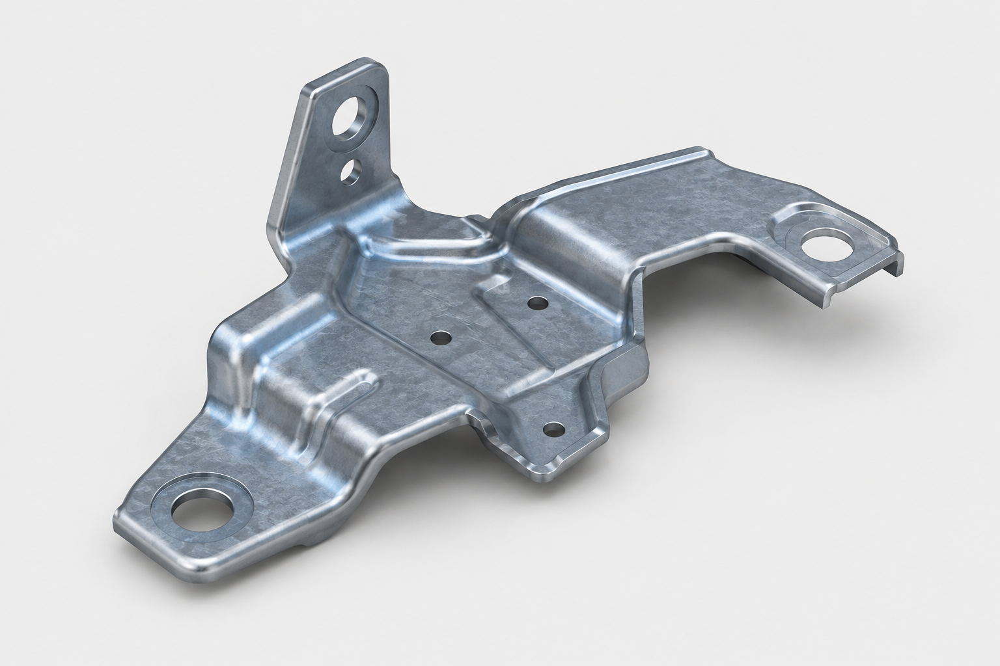
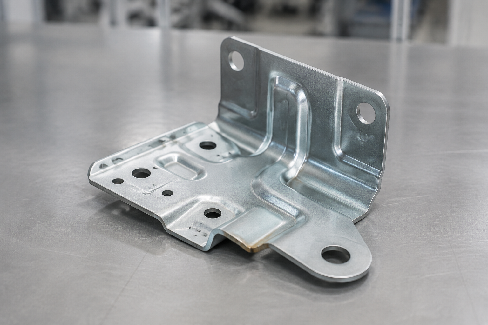

⌕
AG
CENTRO DE INFORMAÇÃO DO PRODUTO
Planificação Avançada
Um único registo para criar, consultar e gerir todas as alterações da peça.

VISUAL 3DBracket LH / RHCX735 · EBPIA13V00
Bracket LH · Ford · Cerveira
72%Completa
9 campos pendentes3 bloqueiam o próximo envio
01
CompletoDados gerais e equipa
Informação mestre do projeto e responsáveis.
Equipa do projeto
CPQPMTCOLGIT+8
02
Vistas mínimas
Campos obrigatórios para criação inicial dos dados em SAP.
12/14campos preenchidos
2 campos obrigatórios em faltaPreencha Código família e Centro de benefício para ativar o envio.
03
4 ações a decorrerPlaneamento das etapas
Acompanhamento transversal desde o produto até ao arranque em série.
| Etapa | Início | Fim | Data real | Responsável | Estado |
|---|---|---|---|---|---|
| 01 Descrição Produto · Processo | 05/09/2026 | 09/09/2026 | 08/09/2026 | Cliente / Projetos | Concluído |
| 02 Revisão do desenho / requisitos | 08/09/2026 | 16/09/2026 | — | Equipa Projeto | Em curso |
| 03 Materiais | 10/09/2026 | 22/09/2026 | — | Compras | Pendente |
| 04 Meios de Produção | 18/09/2026 | 14/10/2026 | — | Projetos | Planeado |
04
Árvore do Produto
Construída pelo Chefe de Projeto e Compras.
Em construção
P
EBPIA13V00Produto final · Bracket LH
1 un.C
COMP-001Corpo estampado principal
1 un.M
WSS-M1A367-A50Chapa galvanizada · 1,8 mm
1,82 kgC
COMP-002Porca M8 soldada
2 un.Estrutura4 elementos2 referências SAP1 fornecedor por definirÚltima alteração por Compras
05
Ficha Técnica
Dados de Métodos/Produção com informação herdada da PA e da árvore.
68% completa
10 · Receção→20 · Estampagem→40 · Soldadura→60 · Controlo→80 · Embalagem
06
Planos e documentação
Acesso direto aos documentos vigentes no repositório corporativo.
Plano 2D da peçaRev. 04 · Atualizado 28/08/2026
Modelo 3DRev. 03 · Atualizado 22/08/2026
Plano de ControloRev. 06 · Em revisão
Ficha de EmbalagemRev. 02 · Vigente
07
Alterações e sincronização SAP
Rastreabilidade integral dos dados enviados para IT.
ALT-2026-0038 · Alteração de fornecedorÁrvore do Produto · 2 campos alterados · por Marta Costa
Em preparaçãoSAP-2026-0029 · Criação de vistas mínimas14 campos enviados · por António Gonçalves
Atualizado em SAPDOSSIER DO PRODUTO
Qualidade
Informação da peça sem duplicação de dados, com controlo documental centralizado.
IMAGEM 3DModelo inicial

FOTO REALAmostra inicialDossier ativo
EBPIA13V00 · Bracket LH
CX735 · Ford · Responsável: Joana Freitas
85%
Documentação completa17 de 20 documentos válidos
Identificação da peça
Dados populados automaticamente a partir da Planificação Avançada.
Estes dados têm origem na PA. Para corrigir um valor, utilize Sinalizar correção; alterações com impacto em SAP seguem para IT.
Documentos obrigatórios
Estado calculado automaticamente.
✓Plano de ControloRev. 06 · Aprovado
✓AMFE ProcessoRev. 07 · Aprovado
!Estudo de capacidadePendente de validação
×Relatório dimensionalDocumento em falta
Atividade da Qualidade
Últimas atualizações do dossier.
Fotografia da amostra adicionadaJoana Freitas · Hoje, 10:18
Plano de Controlo validadoRui Martins · Ontem, 16:04
Dossier criado automaticamenteProduct Hub · 29/08/2026
DOSSIER LOGÍSTICO DO PRODUTO
Logística
Destinos, embalagens e parâmetros logísticos herdados da Planificação Avançada.
PRODUTOBracket LH
Dossier ativo
EBPIA13V00 · Bracket LH
CX735 · Ford · Responsável Logística: Carla Mendes
3
Destinos ativosVigo · Valência · Planta Norte
Dados logísticos da peça
Informação populada automaticamente a partir da PA e da Ficha Técnica.
Os dados comuns têm origem na PA. Reclamações logísticas utilizam automaticamente esta lista de destinos.
QUALIDADE · CLIENTE
Registo de Reclamações
Registe a informação inicial recebida do cliente e encaminhe a reclamação para análise.
EstadoNovo · Em preparação
N.º gestão internoRCQ-2026-0084
ResponsávelJoana Freitas
Data09/09/2026
QUALIDADE · ACOMPANHAMENTO
Gestão de Reclamações
Consulta, tratamento e apuramento dos impactos operacionais e financeiros.
Em tratamento6
Repetitivas3
Peças NOK no mês184
Custo acumulado12 480 €
⌕
| Cliente / Planta | Referência / Piloto | Veículo | Data | N.º rejeição | Nível | PPM | Observações | Repetitiva | Estado | Peças NOK | Custo total | Fatura / débito | |
|---|---|---|---|---|---|---|---|---|---|---|---|---|---|
| FordPlanta Norte | EBPIA13V00Nuno Couto | K9 | 09/09/2026 | ALERTA | 0 | 67 | Abertura NOK · posição do furo | Sim | Em tratamento | 8 | 1 840 € | Pendente | |
| StellantisVigo | EBQAA05V00Rafael Venade | K9 | 07/09/2026 | IN_QAN_368 | G1 | 12 | Componente soldado em falta | Sim | Aguardando dados | 24 | 3 260 € | ND-260914 | |
| RenaultPalência | EBPZA02V00Ivo Carvalho | CMP | 03/09/2026 | AL_1079 | 0 | 4 | Arrastamento superficial | Não | Encerrada | 5 | 680 € | FT-260883 | |
| GestampSovab | EBPIA14V00Joana Freitas | K9 | 01/09/2026 | IN_QAN_569 | B | 0 | Peças com água na embalagem | Sim | Em tratamento | 147 | 6 700 € | Pendente |
4 reclamações apresentadasPeríodo selecionado: 01/09/2026 a 30/09/2026
Tratamento completo da reclamação
RCQ-2026-0084 · Ford · EBPIA13V00
Identificação e classificação
Quantidades e impacto
Custos e documentação financeira
Custo total estimado: 1 840 €
PRODUÇÃO · MÉTODOS
Gama de Parâmetros
Parâmetros vigentes da ferramenta e da máquina.
Gama de Parâmetros Ferramenta / Máquina
E718005V20 / E718003V20 · UAP3 · OP 20Ferramenta(CxLxA) 2950 × 1265 × 805 mmPeso11 115 kgMáquinaP0063 · 630 TnModeloARISAMesa inf.3000 × 1600
| Parâmetro | Un. | Mín. | Inicial | Máx. |
|---|---|---|---|---|
| Posição da ferramenta | — | — | ||
| Curso | mm | — | ||
| Velocidade | golpes/min | |||
| Regulação carro trabalho | mm | — | ||
| Regulação carro montar | mm | — | ||
| Passo alimentador | mm | — | — | |
| Velocidade alimentador | % | — | ||
| Regulação ar equilibrador | bar | — | ||
| Segurança sobrecarga | bar | — | — |
| Sequência | V. inicial | V. final |
|---|---|---|
| Alimentação (±30°) | ||
| Pilotagem subir (±30°) | — | |
| Pilotagem baixar (±30°) | — | |
| Seq. 1 · Alimentador chapa | ||
| Seq. 3 · Alimentador chapa | ||
| Soprador | ||
| Lubrificação da banda | ||
| Tipo de óleo | ||
PRODUÇÃO · CONTROLO DE ALTERAÇÕES
Gestão Gama de Parâmetros
Histórico, comparação e validação das alterações efetuadas nas gamas.
A aguardar validação2
Validadas este mês18
Gamas ativas124
Rejeitadas1
⌕
| Referência | Máquina / Posto | Versão | Alteração | Modificado por | Data | Validador | Estado | |
|---|---|---|---|---|---|---|---|---|
| E718005V20Estampagem · OP20 | P0063 · P0024 | v4 | Velocidade e pressão | José Lima | 03/09/2026 · 14:22 | Rui Martins | Validada | |
| EBPIA13V00Estampagem · OP20 | PR004 · OP20 | v7 | Passo do alimentador | Miguel Torres | 08/09/2026 · 16:05 | Rui Martins | A aguardar validação | |
| EBPIA14V00Estampagem · OP20 | PR004 · OP20 | v5 | Curso da prensa | Ana Ribeiro | 09/09/2026 · 09:41 | Rui Martins | A aguardar validação | |
| EBPZA02V00Soldadura · OP40 | SW012 · OP40 | v3 | Tempo e corrente | Paulo Sousa | 01/09/2026 · 11:18 | Rui Martins | Rejeitada |
FILA DE TRABALHO IT
Pedidos SAP
Todas as criações e alterações submetidas através da Planificação Avançada.
A aguardar IT3
Em tratamento2
Devolvidos1
Concluídos este mês18
| Pedido | Projeto / Referência | Origem | Alterações | Submetido por | Estado | |
|---|---|---|---|---|---|---|
| SAP-2026-0042Hoje, 12:02 | CX735EBPIA13V00 | Árvore do Produto | 4 campos | Marta Costa | A aguardar IT | |
| SAP-2026-0041Hoje, 09:47 | P24004EBPZA02V00 | Ficha Técnica | 7 campos | José Lima | Em tratamento | |
| SAP-2026-003901/09/2026 | QA142EBQAA05V00 | Vistas mínimas | 14 campos | Ana Ribeiro | Devolvido |
ADMINISTRAÇÃO
Dados Mestre
Configuração central de clientes, projetos, pessoas, funções e notificações.
Clientes
Construtores, unidades e contactos.
12 registosProjetos
Programas, veículos e estados.
42 registos ativosPessoas
Utilizadores, emails e departamentos.
86 utilizadoresFunções de projeto
As 14 responsabilidades da equipa.
14 funçõesNotificações
Listas de distribuição e modelos de email.
6 regras ativasPermissões
Perfis, direitos de edição e responsáveis de validação.
Gama de Parâmetros · Rui Martins